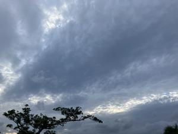

うるがいの話 ある日
最新: 忘れることが多い【うるがいの話 ある日】とは 一日だけのプログです
『うるがいの話』の最新一日だけのプログで、通信料が少なく経済的だ。カニの画像をクリックすると全ての日付が載る『うるがいの話』サイトを表示します
|
|
【うるがいの話】 うるがい(ｳﾙｶﾞｲ urugai)とは、『もずくがに』の名前でとても大きくなります。 |
|---|---|
|
|
【カミマヤーの話】 猫のことを方言でマヤーといいます。カミマヤー（kamimayaa）とは、神の猫のことです。 |
|
【たながぁの音楽】 たながぁ（ﾀﾅｶﾞｰ tanagaa）とは手長えびのことで、何種類かあり大きいのは車 エビぐらいになります。 |

|
【ぶながぁの話】 ぶながぁ(ﾌﾞﾅｶﾞｰ bunagaa)とは、赤い髪の毛、赤い身体、そして身長は１ｍ２０ｃｍ ぐらい、川の蟹を食べているの目撃された。場所は沖縄県国頭郡大宜味村のと ある村僕の隣近所に住んでいる爺さんから、聞いた話です。 |
|
|
【ギーマの話】 ギーマ(giima)とは、山原の里山に咲くスズランに似た、 花を付けます。実は食べられます、 気が付くと口の周りが紫になっています。 |
2025年11月05日 (水）忘れることが多い
16:46

2025年11月05日 (水) 工工四の大作
16:46
弾ける人はいるのであろうか？。なんと７頁もある工工四シート
が、できた。１０月２３日から１３日間、休日なし時々夜の１０
時を過ぎる深夜残業も。高機能のＰＣ３号を使い（工工四シート
作成に５分ほどかかる、普通の性能では無理！）。
発端は、通常の３連符以外の２連符、４連符、変則３連符が曲に
あったためで、代替対応をするのに苦労する。おまけに、６頁が
最大だったのに。それ以外にも、いろいろ御座いました。しかし
あれだね、これら連符をみていると、凡人にはなぜこのメロディ
ーなのか、こだわりがあるのだろうと考えてしまう。くどいがこ
の工工四をみて弾く人はいないと思う。ユーチューブ動画は
クイーン 愛にすべてを
(Queen Somebody to Love) 三線 工工四(pdf)
https://youtu.be/Y-lfqzX70Yg
連符のの代替箇所は、工工四で緑色にしている。詳しく説明する
力は、もう残っていない。